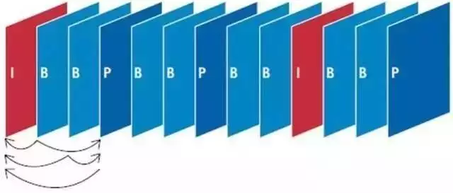
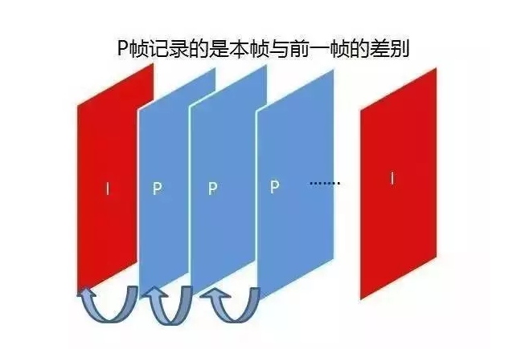
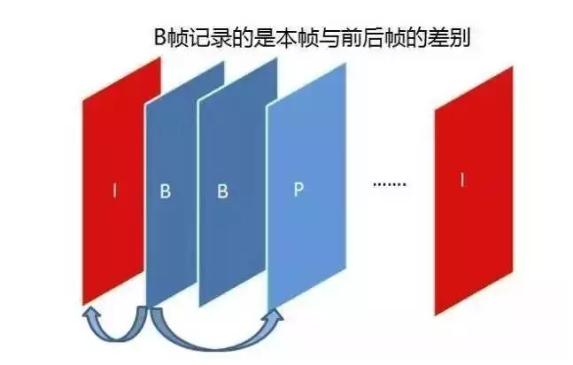
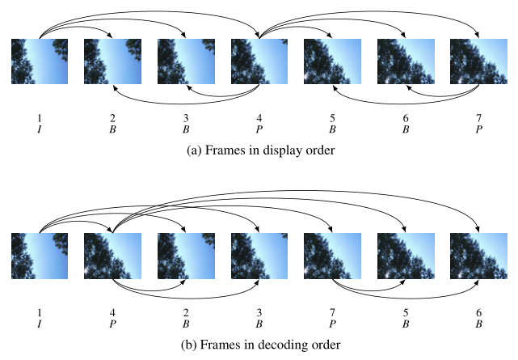
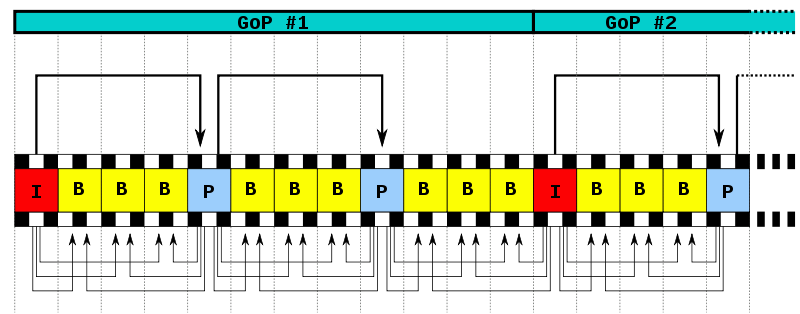
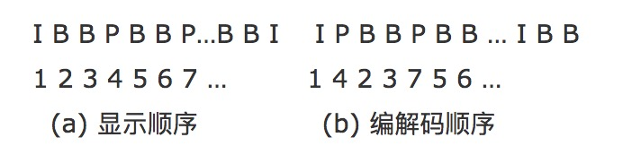

I帧、P帧、B帧、GOP、IDR 和PTS, DTS之间的关系
一.视频传输原理
视频是利用人眼视觉暂留的原理，通过播放一系列的图片，使人眼产生运动的感觉。单纯传输视频画面，视频量非常大，对现有的网络和存储来说是不可接受的。为了能够使视频便于传输和存储，人们发现视频有大量重复的信息，如果将重复信息在发送端去掉，在接收端恢复出来，这样就大大减少了视频数据的文件，因此有了H.264视频压缩标准。
视频里边的原始图像数据会采用 H.264编码格式进行压缩，音频采样数据会采用 AAC 编码格式进行压缩。视频内容经过编码压缩后，确实有利于存储和传输。不过当要观看播放时，相应地也需要解码过程。因此编码和解码之间，显然需要约定一种编码器和解码器都可以理解的约定。就视频图像编码和解码而言，这种约定很简单：
编码器将多张图像进行编码后生产成一段一段的 GOP ( Group of Pictures ) ， 解码器在播放时则是读取一段一段的 GOP 进行解码后读取画面再渲染显示。GOP ( Group of Pictures) 是一组连续的画面，由一张 I 帧和数张 B / P 帧组成，是视频图像编码器和解码器存取的基本单位，它的排列顺序将会一直重复到影像结束。I 帧是内部编码帧（也称为关键帧），P帧是前向预测帧（前向参考帧），B 帧是双向内插帧（双向参考帧）。简单地讲，I 帧是一个完整的画面，而 P 帧和 B 帧记录的是相对于 I 帧的变化。如果没有 I 帧，P 帧和 B 帧就无法解码。
在H.264压缩标准中I帧、P帧、B帧用于表示传输的视频画面。

二. I帧、P帧、B帧，GOP
I帧
I帧:即Intra-coded picture（帧内编码图像帧），I帧表示关键帧，你可以理解为这一帧画面的完整保留；解码时只需要本帧数据就可以完成（因为包含完整画面）。又称为内部画面 (intra picture)，I 帧通常是每个 GOP（MPEG 所使用的一种视频压缩技术）的第一个帧，经过适度地压缩，做为随机访问的参考点，可以当成图象。在MPEG编码的过程中，部分视频帧序列压缩成为I帧；部分压缩成P帧；还有部分压缩成B帧。I帧压缩是帧内压缩法，也称为“关键帧”压缩法。I帧压缩是基于离散余弦变换DCT（Discrete Cosine Transform）的压缩技术，这种算法与JPEG压缩算法类似。采用I帧压缩可达到1/6的压缩比而无明显的压缩痕迹。
【I帧特点】
- 它是一个全帧压缩编码帧。它将全帧图像信息进行JPEG压缩编码及传输;
- 解码时仅用I帧的数据就可重构完整图像;
- I帧描述了图像背景和运动主体的详情;
- I帧不需要参考其他画面而生成;
- I帧是P帧和B帧的参考帧(其质量直接影响到同组中以后各帧的质量);
- I帧是帧组GOP的基础帧(第一帧),在一组中只有一个I帧;
- I帧不需要考虑运动矢量;
- I帧所占数据的信息量比较大。
【I帧编码流程】
- 进行帧内预测，决定所采用的帧内预测模式。
- 像素值减去预测值，得到残差。
- 对残差进行变换和量化。
- 变长编码和算术编码。
- 重构图像并滤波，得到的图像作为其它帧的参考帧。
例如：在视频会议系统中，终端发送给MCU（或者MCU发送给终端）的图像，并不是每次都把完整的一幅幅图片发送到远端，而只是发送后一幅画面在前一幅画面基础上发生变化的部分。如果在网络状况不好的情况下，终端的接收远端或者发送给远程的画面就会有丢包而出现图像花屏、图像卡顿的现象，在这种情况下如果没有I帧机制来让远端重新发一幅新的完整的图像到本地（或者本地重新发一幅新的完整的图像给远端），终端的输出图像的花屏、卡顿现象会越来越严重，从而造成会议无法正常进行。
在视频画面播放过程中，若I帧丢失了，则后面的P帧也就随着解不出来，就会出现视频画面黑屏的现象；若P帧丢失了，则视频画面会出现花屏、马赛克等现象。
在视频会议系统中I帧只会在会议限定的带宽内发生，不会超越会议带宽而生效。I帧机制不仅存在于MCU中，电视墙服务器、录播服务器中也存在。就是为了解决在网络状况不好的情况下，出现的丢包而造成的如图像花屏、卡顿，而影响会议会正常进行。
P帧
P帧:即Predictive-coded Picture（前向预测编码图像帧）。P帧表示的是这一帧跟之前的一个关键帧（或P帧）的差别，解码时需要用之前缓存的画面叠加上本帧定义的差别，生成最终画面。（也就是差别帧，P帧没有完整画面数据，只有与前一帧的画面差别的数据）

【P帧的预测与重构】
P帧是以I帧为参考帧,在I帧中找出P帧“某点”的预测值和运动矢量,取预测差值和运动矢量一起传送。在接收端根据运动矢量从I帧中找出P帧“某点”的预测值并与差值相加以得到P帧“某点”样值,从而可得到完整的P帧。
【P帧特点】
- P帧是I帧后面相隔1~2帧的编码帧;
- P帧采用运动补偿的方法传送它与前面的I或P帧的差值及运动矢量(预测误差);
- 解码时必须将I帧中的预测值与预测误差求和后才能重构完整的P帧图像;
- P帧属于前向预测的帧间编码。它只参考前面最靠近它的I帧或P帧;
- P帧可以是其后面P帧的参考帧,也可以是其前后的B帧的参考帧;
- 由于P帧是参考帧,它可能造成解码错误的扩散;
- 由于是差值传送,P帧的压缩比较高。
B帧
B帧:即Bidirectionally predicted picture（双向预测编码图像帧)。B帧是双向差别帧，也就是B帧记录的是本帧与前后帧的差别，换言之，要解码B帧，不仅要取得之前的缓存画面，还要解码之后的画面，通过前后画面的与本帧数据的叠加取得最终的画面。B帧压缩率高，但是解码时CPU会比较累。

【B帧的预测与重构】
B帧以前面的I或P帧和后面的P帧为参考帧,“找出”B帧“某点”的预测值和两个运动矢量,并取预测差值和运动矢量传送。接收端根据运动矢量在两个参考帧中“找出(算出)”预测值并与差值求和,得到B帧“某点”样值,从而可得到完整的B帧。采用运动预测的方式进行帧间双向预测编码
【B帧特点】
- B帧是由前面的I或P帧和后面的P帧来进行预测的;
- B帧传送的是它与前面的I帧或P帧和后面的P帧之间的预测误差及运动矢量;
- B帧是双向预测编码帧;
- B帧压缩比最高,因为它只反映丙参考帧间运动主体的变化情况,预测比较准确;
- B帧不是参考帧,不会造成解码错误的扩散
【为什么需要B帧】
从上面的看，我们知道I和P的解码算法比较简单，资源占用也比较少，I只要自己完成就行了，P呢，也只需要解码器把前一个画面缓存一下，遇到P时就使用之前缓存的画面就好了，如果视频流只有I和P，解码器可以不管后面的数据，边读边解码，线性前进，大家很舒服。那么为什么还要引入B帧？
网络上的电影很多都采用了B帧，因为B帧记录的是前后帧的差别，比P帧能节约更多的空间，但这样一来，文件小了，解码器就麻烦了，因为在解码时，不仅要用之前缓存的画面，还要知道下一个I或者P的画面（也就是说要预读预解码），而且，B帧不能简单地丢掉，因为B帧其实也包含了画面信息，如果简单丢掉，并用之前的画面简单重复，就会造成画面卡（其实就是丢帧了），并且由于网络上的电影为了节约空间，往往使用相当多的B帧，B帧用的多，对不支持B帧的播放器就造成更大的困扰，画面也就越卡。
【显示和解码顺序示意图】

GOP(序列)和IDR
在H264中图像以序列为单位进行组织，一个序列是一段图像编码后的数据流。
一个序列的第一个图像叫做 IDR 图像（立即刷新图像），IDR 图像都是 I 帧图像。H.264 引入 IDR 图像是为了解码的重同步，当解码器解码到 IDR 图像时，立即将参考帧队列清空，将已解码的数据全部输出或抛弃，重新查找参数集，开始一个新的序列。这样，如果前一个序列出现重大错误，在这里可以获得重新同步的机会。IDR图像之后的图像永远不会使用IDR之前的图像的数据来解码。
一个序列就是一段内容差异不太大的图像编码后生成的一串数据流。当运动变化比较少时，一个序列可以很长，因为运动变化少就代表图像画面的内容变动很小，所以就可以编一个I帧，后面全是P帧和B帧了。当运动变化多时，可能一个序列就比较短了，比如就包含一个I帧和3、4个P帧。
在视频编码序列中，GOP即Group of picture（图像组），指两个I帧之间的距离，Reference（参考周期）指两个P帧之间的距离。两个I帧之间形成一组图片，就是GOP（Group Of Picture）。
【GOP示意图】

I帧和IDR帧
I帧和IDR帧都是独立的，只依靠自己的数据便可以解码。在编码和解码中为了方便，要首个I帧和其他I帧区别开，所以才把第一个首个I帧叫IDR，这样就方便控制编码和解码流程。IDR帧的作用是立刻刷新,使错误不致传播,从IDR帧开始,重新算一个新的序列开始编码。而I帧不具有随机访问的能力，这个功能是由IDR帧承担。 IDR帧会导致DPB（Decoded Picture Buffer，参考帧列表）清空（这是关键所在），而I帧不会。IDR帧一定是I帧，但I帧不一定是IDR帧。一个序列中可以有很多的I帧，I帧之后的B帧可以引用I帧之前的P帧或者I帧做运动参考，但IDR帧之后的B帧一定只会依赖于IDR之后的I帧或者P帧做运动参考。
三.PTS和DTS
【为什么会有PTS和DTS的概念】
通过上面的描述可以看出：P帧需要参考前面的I帧或P帧才可以生成一张完整的图片，而B帧则需要参考前面I帧或P帧及其后面的一个P帧才可以生成一张完整的图片。这样就带来了一个问题：在视频流中，先到来的 B 帧无法立即解码，需要等待它依赖的后面的 I、P 帧先解码完成，这样一来播放时间与解码时间不一致了，顺序打乱了，那这些帧该如何播放呢？这时就引入了另外两个概念：DTS 和 PTS。
【PTS和DTS】
先来了解一下PTS和DTS的基本概念：
DTS（Decoding Time Stamp）：即解码时间戳，这个时间戳的意义在于告诉播放器该在什么时候解码这一帧的数据。
PTS（Presentation Time Stamp）：即显示时间戳，这个时间戳用来告诉播放器该在什么时候显示这一帧的数据。
虽然 DTS、PTS 是用于指导播放端的行为，但它们是在编码的时候由编码器生成的。
在视频采集的时候是录制一帧就编码一帧发送一帧的，在编码的时候会生成 PTS，这里需要特别注意的是 frame（帧）的编码方式，在通常的场景中，编解码器编码一个 I 帧，然后向后跳过几个帧，用编码 I 帧作为基准帧对一个未来 P 帧进行编码，然后跳回到 I 帧之后的下一个帧。编码的 I 帧和 P 帧之间的帧被编码为 B 帧。之后，编码器会再次跳过几个帧，使用第一个 P 帧作为基准帧编码另外一个 P 帧，然后再次跳回，用 B 帧填充显示序列中的空隙。这个过程不断继续，每 12 到 15 个 P 帧和 B 帧内插入一个新的 I 帧。P 帧由前一个 I 帧或 P 帧图像来预测，而 B 帧由前后的两个 P 帧或一个 I 帧和一个 P 帧来预测，因而编解码和帧的显示顺序有所不同，如下所示：

假设编码器采集到的帧是这个样子的：
I B B P B B P
那么它的显示顺序，也就是PTS应该是这样：
1 2 3 4 5 6 7
编码器的编码顺序是：
1 4 2 3 7 5 6
推流顺序也是按照编码顺序去推的，即
I P B B P B B
那么接收断收到的视频流也就是
I P B B P B B
这时候去解码，也是按照收到的视频流一帧一帧去解的了，接收一帧解码一帧，因为在编码的时候已经按照 I、B、P 的依赖关系编好了，接收到数据直接解码就好了。那么解码顺序是：
I P B B P B B
DTS：1 2 3 4 5 6 7
PTS：1 4 2 3 7 5 6可以看到解码出来对应的 PTS 不是顺序的，为了正确显示视频流，这时候我们就必须按照 PTS 重新调整解码后的 frame(帧)，即
I B B P B B P
DTS：1 3 4 2 6 7 5
PTS：1 2 3 4 5 6 7另外，并不是一定要使用B帧。在实时互动直播系统中，很少使用B帧。主要的原因是压缩和解码B帧时，由于要双向参考，所以它需要缓冲更多的数据，且使用的CPU也会更高。由于实时性的要求，所以一般不使用它。不过对于播放器来说，遇到带有B帧的H264数据是常有的事儿。在没有B帧的情况下，存放帧的顺序和显示帧的顺序就是一样的，PTS和DTS的值也是一样的。